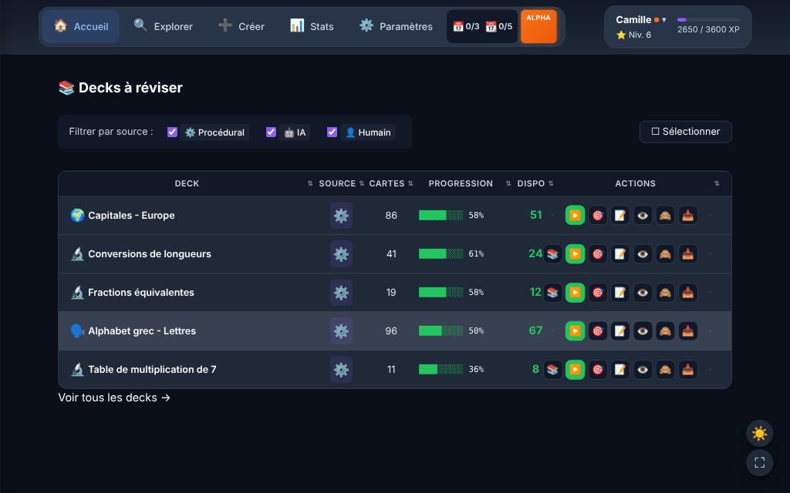
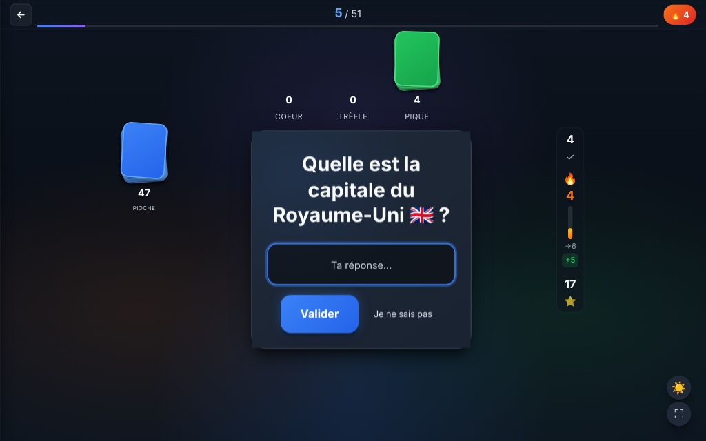
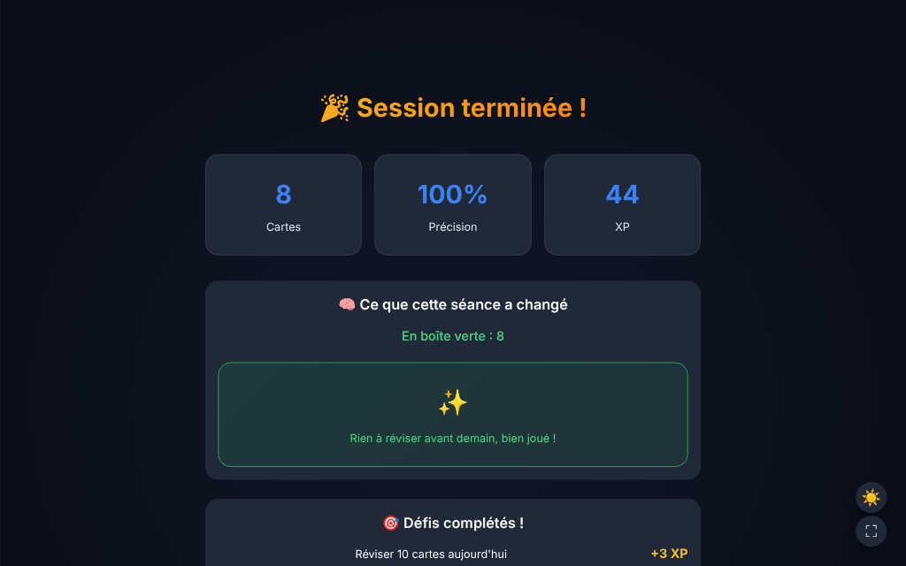
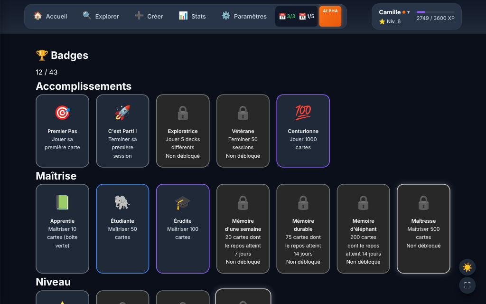

Application de révision par cartes mémoire
Train Your Brain
Cette application sert à apprendre et à réviser avec des cartes mémoire : tables de calcul, capitales, vocabulaire, ou tes propres cours. Elle espace automatiquement les révisions. Elle se lance d’un double-clic, sans internet ni compte.
Le fichier téléchargé est l’application complète : il fonctionne hors-ligne par double-clic dans un navigateur récent, et tes profils et ta progression restent enregistrés sur ton appareil, dans le navigateur.

Ce que fait l’application
Tout ce qui est décrit ici est disponible dans la version actuelle ({{VERSION}}, encore en phase de test).
-
Répétition espacée (Leitner)
Chaque carte vit dans l’une de quatre boîtes. Une réponse fausse la renvoie en violet. Une réponse juste et rapide la fait passer en vert : elle se repose quelques jours avant de revenir. Le seuil de rapidité s’adapte à ta vitesse, carte par carte.
- Non jouée
- Violette : à revoir
- Orange : en cours
- Verte : maîtrisées
-
Des récompenses au service de la mémorisation
Les points et les défis suivent ta révision : ils ne cherchent pas à te faire jouer plus longtemps. Tu gagnes de l’XP (points d’expérience) à chaque carte, de 1 à 3 selon la boîte, avec des bonus de série de cartes vertes, et tu montes de niveau. 43 badges marquent des étapes.
- Jusqu’à 3 défis par jour, fixés d’après les cartes à réviser ce jour-là.
- Un mode défi, une autre façon de faire ses révisions : mêmes cartes, même progression, avec un objectif. Le chronomètre est facultatif.
- Des quêtes hebdomadaires, dont les cibles restent à ta portée.
- Une série de jours de révision : un jour sans carte à réviser ne la casse pas.
- Un bilan de séance qui indique ce qui a progressé et la prochaine révision utile.
Un mode examen est aussi proposé.
-
132 decks fournis
4 760 cartes prêtes à jouer, en français : tables d’addition, de soustraction, de multiplication et de division, fractions, pourcentages, conversions, équations, capitales, départements français, alphabets grec et cyrillique, kana japonais, verbes irréguliers anglais, tableau périodique, chiffres romains, binaire, notions de musique.
-
Créer et importer ses decks
Un éditeur intégré gère les questions à réponse libre, numériques, QCM, vrai/faux, textes à trous et associations, avec formules LaTeX. Les decks s’importent et s’exportent en YAML et en Moodle XML.
Un générateur de prompts prépare des consignes pour un assistant IA de ton choix. Tu réimportes ensuite le résultat. Rien n’est envoyé à un assistant par l’application.
-
Vocabulaire multilingue
Des decks de vocabulaire avec traduction, dictée audio et mode image. Leur création passe par des services Wikimedia, à ta demande (voir « Vie privée et réseau »). Réviser ne demande aucune connexion.
-
Plusieurs profils
Chaque personne a son profil, avec sa progression, ses badges et ses statistiques sur le même appareil. Un profil peut être sauvegardé dans un fichier puis restauré ailleurs.
-
Thèmes et accessibilité
Huit thèmes de couleurs, un mode dyslexie (avec la police OpenDyslexic, embarquée), un mode contraste élevé, un espacement large du texte et un mode daltonien. L’interface s’adapte aux écrans de téléphone comme d’ordinateur et se commande au clavier.
L’interface existe en français et en anglais, au choix de chaque profil. L’interface française te tutoie et accorde les textes au féminin par défaut ; un réglage permet de choisir le masculin ou la forme à point médian. Le contenu des decks reste en français, même quand l’interface est en anglais.
L’application en images
Captures de la version actuelle ({{VERSION}}), avec un profil d’exemple.



Vie privée et réseau
Voici ce que l’application fait, et ne fait pas, avec internet.
-
Réviser : aucune connexion
Réviser, jouer, créer un deck à la main et importer ou exporter un deck n’ont besoin d’aucune connexion. L’application ne charge aucune ressource distante, y compris celles qu’un deck importé référencerait (images, sons).
-
Seuls accès réseau : deux créateurs de decks
Les créateurs de decks de dictée et multilingues interrogent Lingua Libre, Wikimedia Commons et Wikidata, uniquement quand tu le demandes. Ils leur envoient le mot cherché et sa langue.
-
Tes données restent dans le navigateur
Tes profils et ta progression sont enregistrés dans le stockage de ton navigateur, sur ton appareil. Rien n’est envoyé à un serveur du projet : il n’y en a pas. Cette page d’accueil n’utilise aucun script et aucune mesure d’audience.
Logiciel libre
Train Your Brain est publié sous licence AGPL version 3 ou ultérieure (texte de la licence) : tu peux l’utiliser, l’étudier, le modifier et le redistribuer. Les decks (paquets de cartes) fournis sont sous licence CC BY-SA 4.0 (texte de la licence). Copyright © 2025-2026 Jean-Mathieu Chantrein. Le code source est sur github.com/jmchantrein/train-your-brain.
Contribuer
Les decks de qualité sont les bienvenus : propose-les par pull request dans le dossier decks/ du dépôt. Les corrections et idées de fonctionnalités passent aussi par une pull request, et les conventions de code sont décrites dans le dépôt.
Un projet IA et humain
Le code, les tests et la documentation sont produits par une IA (Claude) sous supervision humaine. Le projet est expérimental : la version actuelle est une alpha, des erreurs peuvent subsister, y compris dans les decks.